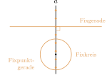
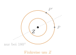
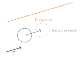

Aufgabe 3.4
Gibt es bei der Achsenspiegelung auch andere «Fixobjekte», wie «Fixkreise», «Fixdreiecke» etc.?
Wie sieht es bei einer Drehung oder einer Verschiebung aus?
Womit anfangen? Gehen Sie die Objektarten der Reihe nach durch — Punkt, Gerade, Kreis, Dreieck — und stellen Sie bei jeder dieselbe Frage.
- Muss bei einem Fixobjekt jeder einzelne Punkt liegen bleiben?
- Was müsste für den Mittelpunkt eines Kreises gelten, damit der Kreis fest bleibt?
- Kann ein beschränktes Objekt eine Verschiebung überstehen?
| Achsenspiegelung | Drehung (${\neq}$ id) | Verschiebung (${\neq}$ id) | |
| Fixpunkte | alle Punkte der Achse | nur das Zentrum | keine |
| Fixgeraden | die Achse selbst; ausserdem alle Geraden senkrecht dazu | keine; nur bei $180^\circ$ alle Geraden durch das Zentrum | alle Geraden parallel zum Verschiebungsvektor |
| Fixkreise | alle Kreise mit Mittelpunkt auf der Achse | alle Kreise um das Zentrum | keine |
| Fixdreiecke | gleichschenklige Dreiecke mit der Achse als Symmetrieachse | bei $120^\circ$ gleichseitige Dreiecke um das Zentrum | keine |
Achsenspiegelung

Eine Gerade senkrecht zur Achse wird auf sich abgebildet, auch wenn ihre Punkte dabei die Seite wechseln. Ein Kreis bleibt, wenn sein Mittelpunkt liegen bleibt — also wenn er auf der Achse liegt.
Drehung

Jeder Punkt ausser dem Zentrum wandert auf seinem Kreis um das Zentrum; diese Kreise sind damit die Fixkreise. Eine Gerade kann nur dann auf sich fallen, wenn die Drehung ihre Richtung erhält — das leistet ausser der Identität nur die Halbdrehung.
Verschiebung

Es bleibt überhaupt kein Punkt liegen. Eine Gerade bleibt trotzdem erhalten, sofern sie in Verschiebungsrichtung verläuft; ein beschränktes Objekt wie ein Kreis oder ein Dreieck kann das nie.
Im Video: Etappe 6 · Die Taxonomie bei 8:53